Senior Designer | Brand, Product & Creative Systems
My career never followed a straight line. And that’s exactly what shaped the designer I am today. Over 18 years in design, I’ve worn different hats, explored new directions, and discovered how each chapter connects to the next.
Scroll to explore my journey
Choose a stage
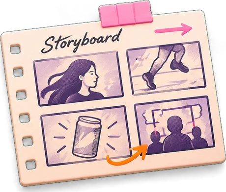
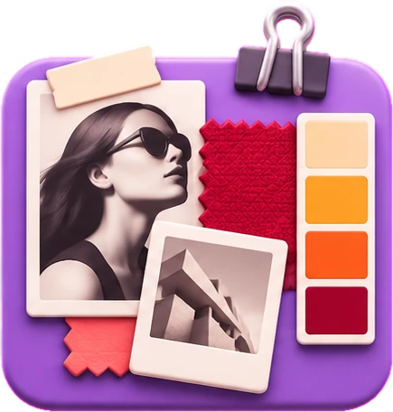
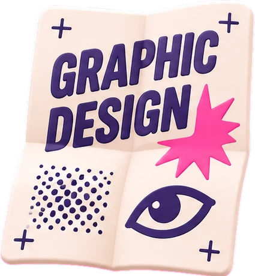
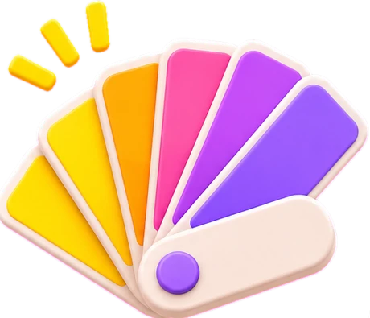
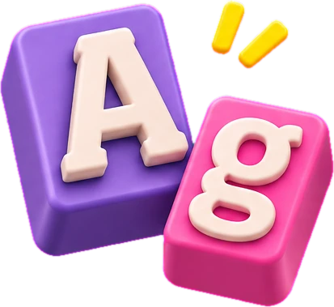
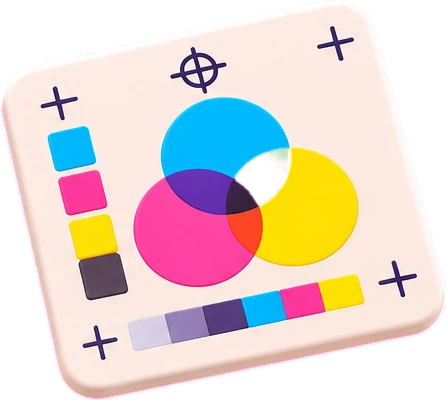
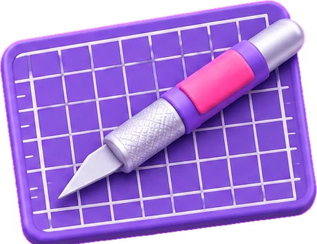
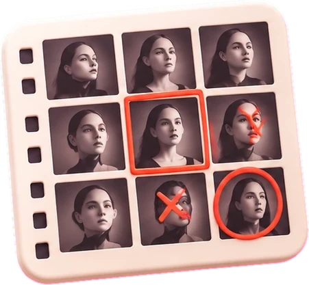
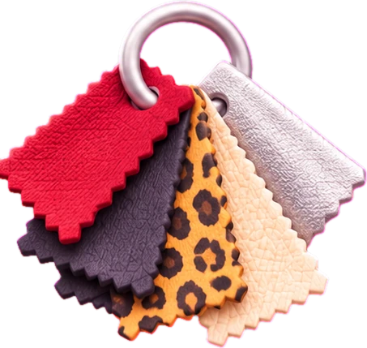
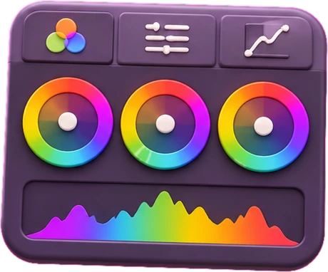
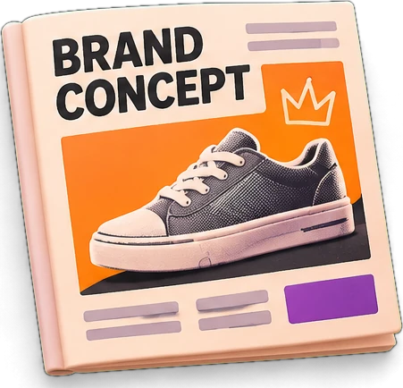
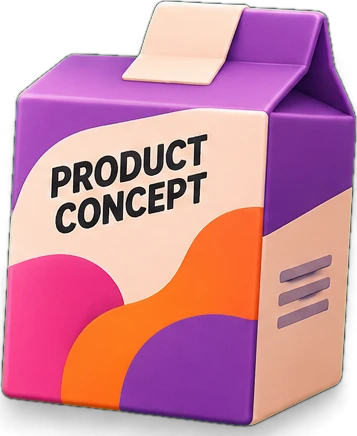
Senior Designer | Brand, Product & Creative Systems
18+ years
From branding and art direction to digital products, entrepreneurship, and team leadership, I’ve learned to connect creativity, systems, and real-world challenges. I bring all those perspectives together to create thoughtful, engaging, and visually distinctive experiences.
Visual Design
Brand Identity
UI & Design Systems
Creative Leadership
Design Team Lead
3 years
I led designers, supported their growth, and helped turn complex projects into more consistent digital experiences. Working across design, product, engineering, and marketing taught me that leadership is about creating clarity, building trust, and making space for others to do great work.
Team Leadership
Mentoring
Design Systems
Cross-functional Collaboration
Digital Designer
6 years
My focus evolved from visual communication to digital experiences. Designing interfaces, prototypes, and scalable components taught me to balance aesthetics with usability and collaborate closely with developers to bring ideas to life.
UI Design
Prototyping
Design Systems
Developer Collaboration
Entrepreneur
3 years
I stepped outside the design world to become an entrepreneur in the food industry. I built one business from the ground up, from branding and concept to product development, while also co-owning and managing a fast-food franchise. Balancing people, customers, finances, and daily operations changed how I think about design: great ideas need to work as businesses, too.
Entrepreneurship
Brand Building
Business Operations
Problem Solving
Art Director
9+ years
From fashion campaigns and editorial projects to brand communication, I moved beyond individual designs to shaping complete creative concepts. I learned to connect strategy, visuals, and execution, and eventually to guide creative work beyond my own.
Art Direction
Campaigns
Editorial Design
Creative Leadership
Graphic Designer
4 years
I turned briefs into visual identities, layouts, and communication materials, working across different clients and formats. This hands-on experience sharpened my eye for typography, composition, and detail, skills that still shape every interface I design today.
Visual Identity
Typography
Layout Design
Print & Digital
Advertising Student
4 years
I studied Advertising & Marketing, exploring how brands communicate through ideas, visuals, and storytelling. It was where I discovered that creativity isn’t just about making things look interesting. It’s about making people connect with them.
Creative Thinking
Storytelling
Brand Communication
Consumer Insights
Selected Work
01 / 04
Snoof
01
Self-initiated project · End-to-End Design
I ran the research, made the product and design decisions, and created the identity, with AI supporting analysis and prototyping.
I’m Jackie. A curious mind, a thoughtful observer, and a designer who believes the best ideas often start with a good conversation.
I like to listen, ask questions, and connect the dots before jumping in with an opinion. Different perspectives often lead to ideas I wouldn’t have discovered on my own.
I’ve also been on the other side of the brief. Running my own business taught me to navigate pressure, manage people, and understand the challenges behind business decisions. It changed how I approach design problems and shaped the way I lead: balancing clear processes with a creative space where people feel comfortable being themselves.
I’m always curious about what’s next, whether it’s a new perspective, an emerging trend, or a different way of working. These days, I’m especially excited about exploring how AI can expand what’s possible in design.